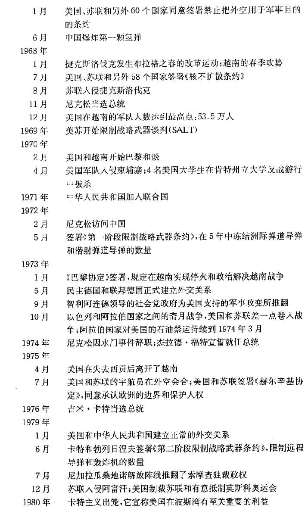
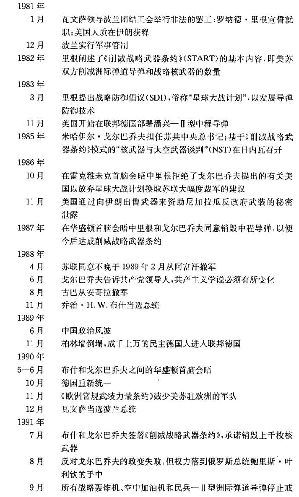

解释冷战¶
解释冷战的三个思想流派¶
- 传统派
- 斯大林和苏联导致了冷战的产生
- 修正派
- 美国的扩张主义导致冷战产生
- 个人层次：杜鲁门停止执行战时租借援助计划；民主党从左倾和中立转向右倾；任命强硬的反共分子作为新国防部长
- 国家层次：美国的经济性质决定着美国要采取扩张主义政策，美国的经济霸权绝不能容忍任何国家建立起一个独立的经济区。
- 后修正派
- 苏联更关心确保领土控制,既包括对本国的控制,也包括对缓冲区或者势力范围的控制。美国的主要兴趣在于建立一个自由的、根据规则治理的国际秩序。
- 美国倡导全球性的联合国制度,而苏联则努力巩固其在东欧的势力范围。
- 在一个意识形态两极化的世界中,一个强大的国家会在其势力范围内使用军事力量,按照自己的意象去重新塑造其他国家,以确保自身的安全。
罗斯福的政策¶
罗斯福希望建立一个自由贸易体系，避免出现曾在20世纪30年代破坏世界经济以及促使战争爆发的保护主义。
罗斯福的计划并不天真,但他的某些策略确实是天真的。他对联合国寄予太大的期望,过高估计了美国孤立主义势力,而且最为重要的是,他过分低估了斯大林的敌意。
罗斯福没有充分认识到,斯大林及其追随者是极权主义者,"他以人民的名义,屠杀了无数的人；他为了防备希特勒的进攻,同希特勒签订了一项条约,和希特勒一起瓜分战利品,像希特勒一样驱赶、消灭或奴役其周边的民族；他在德国西进的时候袖手旁观,并且挖苦那些西方国家,而在希特勒东进的时候又指责西方国家没有向苏联提供足够的支持”
罗斯福所犯的错误在于,他认为斯大林看世界的方式与自己一样,相信自己了解美国的国内政治,觉得可以用美国领导人那种调和分歧与增进友谊的政治技巧,与斯大林打交道。
斯大林的政策¶
斯大林的战后主要目标是加强国内的控制。
战争期间，斯大林借助民族主义号召民众，因为共产主义意识形态的吸引力下降，不足以动员苏联人民。
战后，斯大林采取孤立主义政策，旨在消除来自欧洲和美国的外部影响。
如果国际合作有助于苏联实现其在东欧的目标和从美国获得一些经济援助,那么斯大林愿意采取某些合作的态度。作为一个杰出的共产主义者,他相信美国会向苏联提供经济援助,因为资本主义国家必须向外输出资本,以解决国内需求不足的问题。
斯大林是一位坚定的共产主义者,虽然他用共产主义的认识框架看世界,但是他经常采取务实的策略。
威慑和遏制¶
两种国家可能进行的对外政策的动力：
- 威慑 deter ：通过恐吓，让对手打消某种念头。冷战中的威慑依赖于拥有大量核武器，努力防止另一个国家取得优势。
- 遏制 contain：指通过美国的盟友和美国的军事基地，以及在苏联势力范围之外推动形成一个自由的世界经济与政治秩序，来包围苏联。
解释冷战¶
| 时期 | 名称 |
|---|---|
| 1945～1947 | 冷战序幕和滑向冷战的阶段 |
| 1947～1949 | 冷战开始阶段 |
| 1950～1962 | 冷战高潮阶段 |
促使美国调整战略的6个问题：¶
- 波兰和东欧问题
- 美国认为，斯大林违背了战后在波兰举行自由选举的诺言
- 1945年2月的雅尔塔协定也比较含糊,斯大林极力按自己的需要来解释其含义,当苏联红军从波兰赶走德国人之后,苏联便在华沙建立了一个共产党政府。美国人感觉自己受到了欺骗,但是斯大林认为美国人会接受现实,因为是苏联军队解放了波兰。
- 1945年5月，美国突然终止租借援助计划
- 1946年2月，美国拒绝苏联的贷款要求，苏联人把以上美国的两个做法解释为敌视行为
- 德国问题
- 在雅尔塔会议上,美国和苏联同意,德国要支付200亿美元的赔款,其中一半给苏联。但是雅尔塔会议并没有确定如何以及何时支付赔款,只是决定以后再讨论这个问题。在1945年7月的波茨坦会议上,苏联要求获得100亿美元的赔款,而且它要求这些赔款应从美、英、法占领的德国西区获得。
- 杜鲁门提出，如果苏联要获得赔款，应该从自己占领的德国东区获得。
- 美国同英国、法国一起，在德国西区发行新货币，开始把德国西区融入西方的过程，这也导致苏联加强对德国东区的控制。
- 东亚问题
- 直到战争结束的一个星期前,苏联在太平洋战争中还保持中立的态度。然后苏联就向日本宣战,并乘机从日本手中夺取中国东北、库页岛南部以及整个千岛群岛。在波茨坦会议上,苏联要求在日本获得一个占领区,就像美国拥有一个德国的占领区一样。杜鲁门的反应实际上是这样的:苏联人来迟了一步,所以不能获得一个占领区。
- 然而,这不能不让苏联人联想起东欧的情形,美国要求在东欧举行自由选举和在东欧事务上拥有发言权,而苏联军队是最先到达这个地区的。因此,苏联人把远东情势与东欧情势相类比,而美国人则把远东发生的事视为苏联努力扩张其影响的又一个例证。
- 原子弹问题
- 1946年,美国提出了由联合国控制核武器的"巴鲁克计划",斯大林对此表示断然拒绝,因为他想制造自己的核武器。在斯大林看来,处于国际控制下的原子弹仍然是美国的原子弹,因为只有美国人知道如何制造原子弹,苏联拥有原子弹更有助于维护自己的安全。苏联研制的原子弹终于在1949年爆炸成功。
- 东地中海和中东国家
- 首先是1946年3月苏联拒绝从伊朗北部撤军。美国在联合国的有关辩论中支持伊朗。苏联最后还是撤走了军队,但是这个事件让苏联人感到很不高兴。
- 接着苏联对南面的土耳其施加压力，而且希腊共产党看上去快要获得希腊内战的胜利。这些事件让西方更加相信,苏联人正在扩张其势力。
一些观察家指出,在民主国家中改变公众舆论比在极权国家中改变政策要困难得多。

欧洲冷战的早期
马歇尔计划¶
1947年6月，马歇尔提出援助欧洲的计划。斯大林认为这是美国用来破坏东欧作为苏联安全缓冲区的地位，于是加强了对东欧的控制，1948年2月，共产党完全掌握了捷克斯洛伐克的政权。
美国得知后，提出了有关德国西区货币改革计划，斯大林以封锁柏林来回击。美国继而实施空运和建立北大西洋公约组织。
1949年苏联爆炸第一颗原子弹和中国共产党解放中国让冷战进入最僵硬的阶段。
朝鲜战争
- 1950.6.25-1953.7.27
- 北韩: 中国,苏联
- 南韩: 联合国, 主要是美国
- 1950年10月19日, 中国军队跨过鸭绿江, 突出其来的攻击让联合国退到38度纬线以南.
- 造成的平民死亡人数大于二战, 死亡约300万
- 美国在战争中所遭受的挫折使国内发生分裂并使麦卡锡主义兴起

冷战的起源¶

世界政治的重要赌注或者那些可以影响均势的国家(特别是欧洲国家和日本), 正好位于苏联的边缘地带. 世界上有4个地区具有技术和工业方面的创造力,它们的同盟倾向将左右全球的均势, 这4个地区是美国,苏联,欧洲和日本.
苏联的政治文化及其在外交中的表现,是由俄国传统以及共产主义意识形态两个方面的根源决定的.
政治文化特征¶
建构主义者认为 , 俄国的政治文化具有以下几个特征:
- 强调专制而非民主, 渴望有一个强硬的领导人,害怕出现无政府状态
- 担忧外来入侵(俄国是一个在地理上很脆弱的陆上大国,在过去几个世纪里多次遭受邻国的侵略)
- 希望甩掉落后的帽子以及崇尚秘密
- 以阶级的权利而不是个人的权利为正义的基础
- 对外政策过程是秘密的,受到严密控制
美国的政治文化:
- 强调自由民主,多样性和权力分散
- 对自己国家在技术和经济上所取得的成就感到自豪
- 周围国家弱小, 无需担心外来入侵
- 十分重视个人正义,不强调阶级正义
- 对外政策强调道义感和公开性,而且总是在内向和外向两种倾向之间来回摇摆不定,对外政策的过程常常是前后不一致,缺乏连续性的
- 公开性和多样性的优点经常能保证美国避免犯更大的错误
对美国来说,苏联像一个暗箱,对苏联来说,美国像一个发出噪音的机器,产生的背景场景太杂,让人很难听清真正的信号音.
美国和苏联在冷战中的目标¶
后修正主义者认为, 苏联更倾向于追求具体目标或占有目标,美国倾向于追求抽象或环境目标.
斯大林想从德国和波兰获得权益,罗斯福想建立联合国和开放的国际经济制度.
冷战结束的原因¶
突发原因
- 米哈伊尔 戈尔巴乔夫想对共产主义改革,改革像滚雪球一样导致了一场自下而上的革命.戈尔巴乔夫在内政和对外政策所采取的一系列行动,加速了苏联的衰落和冷战的结束.
- 戈尔巴乔夫在1985年上台后的最初时期,试图通过增强苏联人的纪律来克服经济停滞问题。在发现加强纪律不足以解决问题之后,他又提出了"改革"(perestroika）的主张,但是他无法进行自上而下的改革,因为官僚们不服从他的指示。为了打击官僚主义者,他推出了"公开化"(glasnost）战略,或者公开讨论问题和民主化进程。戈尔巴乔夫坚信,让人民发泄对苏联制度的不满情绪,可以对官僚主义者施加极大的压力,并且使改革产生作用。然而,一旦公开化和民主化允许人民把自己的真实想法讲出来并且享有表决权,许多人就会提出:"我们要改变现状。在苏联没有新型的公民。这是一个帝国王朝,我们对这个帝国没有归属感。”
- 戈尔巴乔夫认为保留最低限度的核保护力量足够,扩张在代价大于收益,于是弱化了控制东欧的力量, 促使柏林墙被推倒
中层原因
- 西方自由观念被苏联执政党内部接受
- 帝国过度扩张: 苏联巨额军费支出开始影响苏联社会.
深层原因
- (建构主义者)共产主义意识形态影响的衰落
- (现实主义者)苏联经济的衰退
- 苏联的集中经济管理制度的僵化导致其在信息技术竞争中落后
影响¶
苏联解体后,俄罗斯试探性地迈上了民主化和经济自由化的道路, 最初听从国际货币基金组织的建议,实施经济”休克疗法”,希望以此完成俄罗斯从经济集权制国家到自由民主国家的转变,但”休克疗法”导致了俄罗斯社会大分裂,**随着经济形势的恶化,俄罗斯的民族主义开始复苏.
为什么冷战没有发展成第三次世界大战¶
核武器的作用¶
美国不能逼迫苏联同它进行合作, 因为欧洲是夹在美国和苏联中间的人质. 如果美国以核进攻来威胁,那苏联可以用对欧洲发动常规军事进攻来威胁美国.
核武器的威力过大, 不再被认为是用于声张政治主张的延续手段, 因而与任何有意义的目标脱节.
核武器产生的五个重大政治后果:
- 让人们重新接受有限战争的观念
- 危机取代战争成为真实的瞬间(用核武器作威胁已经达到了类似战争的作用)
- 核武器威慑成为一种重要的战略
- 核武器导致超级大国事实上的行为谨慎规制的产生: 两个超级大国虽然存在严重的意识形态分歧, 但有共同的利益----避免核战争.
- 核武器,尤其是氢弹,被大多数官员视为战时不可使用的武器.
核威慑的问题¶
绝大多数分析家认为,假如没有核武器的水晶球效应促使政治家采取谨慎的态度,那柏林危机, 古巴危机,或许还有中东危机,很可能升级和失控.
有效的威慑不仅要求具有伤害对手的能力,也需要让对手相信某种武器将会被使用.可信性(credibility)取决于冲突所涉及的利害关系到底有多大.
- 柏林危机
- 1948年,苏联阻塞铁路和到柏林西部的通道
- 1958年,苏联要求英美法6个月撤出西柏林驻军,以苏联让步完结.
- 1961年,苏联重新提出西柏林撤军要求,以苏联在东柏林筑起柏林墙为终结
- 古巴危机
- 古巴曾经是美国事实上殖民地的国家,后来加入苏联营垒.
- 赫鲁晓夫企图把核武器偷偷运进古巴
- 赫鲁晓夫和肯尼迪实际上难以控制本国军队的危险行为,他们也清楚这一点
- 传言美国悄悄向苏联许诺自己将从土耳其撤走其已该退役的导弹
核武器的数量对比并不是那么重要,少量核武器就极具破坏力的事实所导致的恐惧心理,比起核武器的数量对比要重要得多.
道义问题¶
正义理论认为,道义判断需要符合特定条件.
从手段来说,必须区分战斗人员和平民;从结果来说,目标和手段要相称.
核武器在防止冷战变成热战上,可能起了重要的作用.但是,只要人们还具有核知识,某种程度的核威慑就肯定会继续存在.
美国的苏联经过一段时间才学会控制核武器,但我们不清楚,那些希望拥有核武器的国家,比如朝鲜,或许还有伊朗,将来是否会遵循这样的控制规则.此外,这些控制规则也可能对恐怖主义者没有效用.



